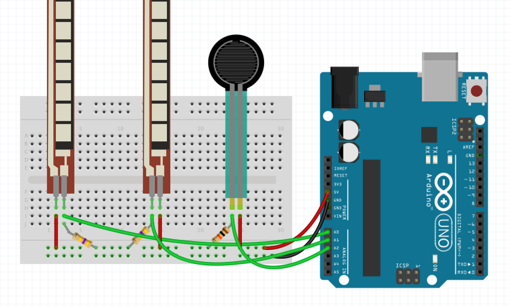
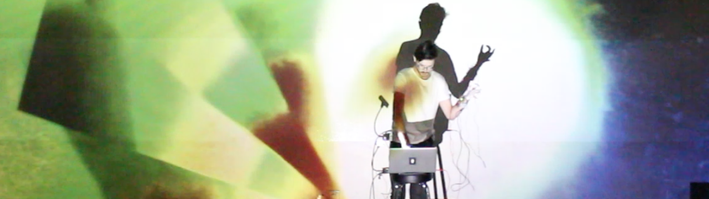
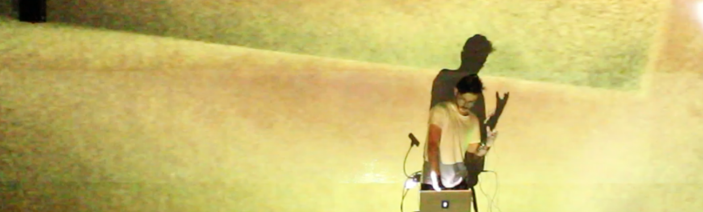
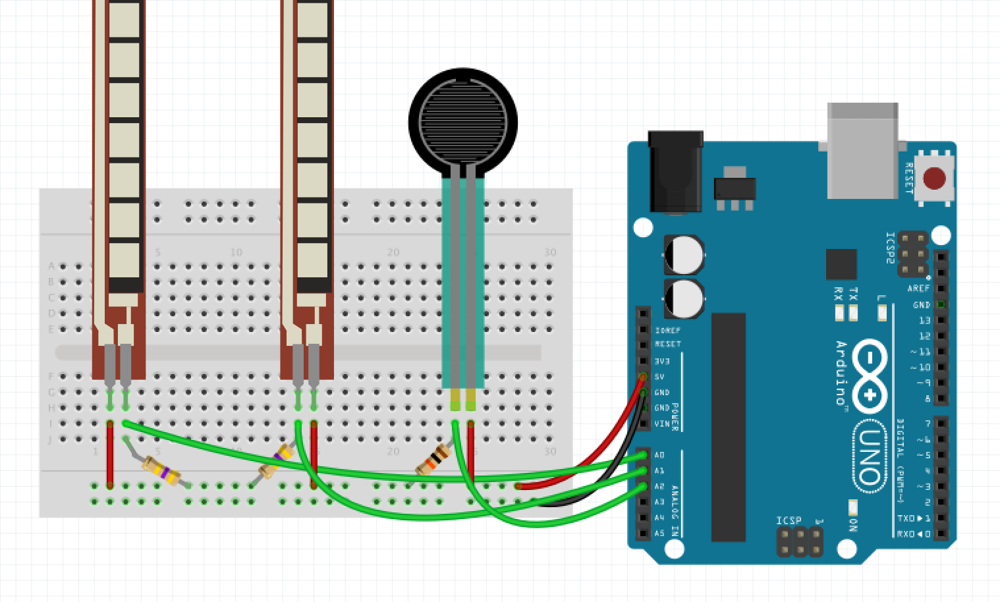
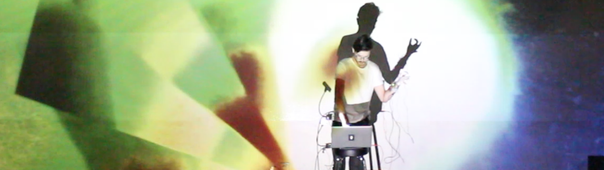
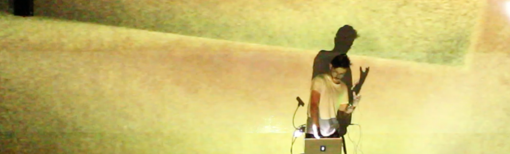

Nebula is a performance conceived as a final project for the class Sensors, Body, and Motion in Spring 2017. The piece uses a feedback process to generate visuals that are roughly composed to accompany and be accompanied by a piece of music. The setup involves a human performer, a Logitech Webcam, a laptop screen, rear projection, and set of sensors for manipulating the inputs. Initially, I intended to use one webcam on each hand, the first aimed at the computer screen in front of the performer. The webcam on the other hand would be aimed at the rear projection or the audience. A mix of these two signals would be fed to the output video on the computer screen, then re-captured by the first webcam, thus leading to a multi-source feedback loop. For this performance, I reduced the system to using only one webcam.
The performance is partly composed and partly relies on performer improvisation. I identified several gestures or specific replicable visuals that I could use in the composition process:
- Hue cycle - activated by thumb press
- Fractal feedback - started by pulling hand away from screen
- Change saturation - bending left finger
- Pixelation/screen effect - bring camera very close to screen
- Pulsing color flow - Bring camera up and right from bottom of output screen
The sensors that I settled on were two flex resistors and one force sensitive resistor. The flex sensors and FSR are attached to a glove so that the flex sensors have a value that is mapped to the bend of the my two index fingers separately, and the FSR is placed on my right thumb, functioning as a trigger if put into contact with another finger. The right index determines the mix amount between the two video feeds. A fully straightened finger gives 100% feed to one camera, while a 50% bend, mixes between the two video sources. A fully bent finger means that only the other video is mixed into the input.
The FSR acts as a trigger for an envelope in Isadora, which feeds into the HSL Adjust actor and performs a sweep on the Hue offset of the secondary video input.
For putting together the entire setup, I sewed the flex sensors and FSR into a pair of gloves. These sensors were connected to a small circuit I soldered on some perfboard and combined on a holder next to the Arduino Redboard. I placed these on a cardboard holder attached to my forearm with a velcro band.
 





The Arduino code I wrote for this project can be seen below:
// FSR code modified from: http://bildr.org/2012/11/force-sensitive-resistor-arduino
// Smoothing modified from Aaron Sherwood: https://github.com/aaronsherwood/nyuadSpring2017-sensorsbodymotion
int FSR_Pin = A0; //analog pin 0
int smoothedFSR = 0;
float FSRSmoothRatio = .05;
int flexSensorPin = A1; //analog pin 1
int flexSensorPin2 = A2; // analog pin 2
// Define the number of samples to keep track of. The higher the number,
// the more the readings will be smoothed, but the slower the output will
// respond to the input. Using a constant rather than a normal variable lets
// use this value to determine the size of the readings array.
const int numReadings = 25;
int readingsFlex[numReadings]; // the readings from the analog input
int readIndexFlex = 0; // the index of the current reading
int totalFlex = 0; // the running total
int averageFlex = 0; // the average
int readingsFlex2[numReadings]; // the readings from the analog input
int readIndexFlex2 = 0; // the index of the current reading
int totalFlex2 = 0; // the running total
int averageFlex2 = 0; // the average
void setup(){
Serial.begin(9600);
for (int thisReading = 0; thisReading < numReadings; thisReading++) {
readingsFlex[thisReading] = 0;
}
}
void loop(){
int FSRReading = analogRead(FSR_Pin);
FSRReading = constrain(FSRReading, 0, 800);
FSRReading = map(FSRReading, 0, 800, 0, 100);
// range 0 -800 to be safe
// flex sensor 1
int flexSensorReading = analogRead(flexSensorPin);
int constrainedFlex = constrain(flexSensorReading, 200, 550);
constrainedFlex = map(constrainedFlex, 230, 550, 400, 660);
constrainedFlex = map(constrainedFlex, 400, 660, 0, 100);
totalFlex = totalFlex - readingsFlex[readIndexFlex];
readingsFlex[readIndexFlex] = constrainedFlex;
totalFlex = totalFlex + readingsFlex[readIndexFlex];
readIndexFlex = readIndexFlex + 1;
// if we're at the end of the array...
if (readIndexFlex >= numReadings) {
readIndexFlex = 0;
}
averageFlex = totalFlex / numReadings;
// flex sensor 2
int flexSensorReading2 = analogRead(flexSensorPin2);
int constrainedFlex2 = constrain(flexSensorReading2, 400, 660);
constrainedFlex2 = map(constrainedFlex2, 400, 660, 0, 40);
// 0 to 40 so that in Isadora, they saturation goes betwen 100 and 140
totalFlex2 = totalFlex2 - readingsFlex2[readIndexFlex2];
readingsFlex2[readIndexFlex2] = constrainedFlex2;
totalFlex2 = totalFlex2 + readingsFlex2[readIndexFlex2];
readIndexFlex2 = readIndexFlex2 + 1;
// if we're at the end of the array...
if (readIndexFlex2 >= numReadings) {
readIndexFlex2 = 0;
}
averageFlex2 = totalFlex2 / numReadings;
sendToIsadora(1, FSRReading);
sendToIsadora(2, averageFlex);
sendToIsadora(3, averageFlex2);
//Serial.println(flexSensorReading);
delay(10); //just here to slow down the output for easier reading
}
void sendToIsadora (int route, int value)
{
Serial.print(route);
Serial.print('|');
Serial.print(value);
Serial.print(' ');
}